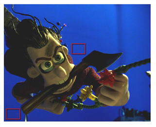

用导航打开主题
添加取样谷物
要向序列中添加颗粒，请执行以下操作:
|
|
1。
|
选择
图像
>
阅读
加载要添加颗粒的序列。然后，加载要从中采样谷物的图像。
|
|
|
2.
|
确保您的工作是完全分辨率，而不是代理分辨率。F_ReGrain 在代理解析时不起作用。(见
代理决议
)。
|
|
|
3.
|
选择
FurnaceCore
>
F_ReGrain
.
|
|
|
4.
|
将您希望具有 grain 的序列连接到 F_ReGrain 的源 (
Src
) 输入。然后，将要从中采样谷物的序列连接到
谷物
输入。查看 F_ReGrain 的输出。
|
|
|
6.
|
将屏幕上的示例区域定位在
谷物
序列只包含谷物，没有图片细节。见下图。
|
|

|
这显示了两个可能的选择区域
不包含边缘细节和小
亮度变化。
|
正确选择是很重要的。你应该避免任何图像细节，甚至是纹理下面有亮度变化的平原区域。初始选择越好，结果就越好。如果在当前帧上找不到像样的样本区域，请尝试同一胶片库存中的其他帧。样本区域的默认大小应该足以收集图像纹理特征的信息。但是，您可能需要更改其大小和形状，以适应没有图像细节的平原区域。
警告:
这个样本区域有一个最小尺寸，低于这个尺寸，谷物的统计分析将是不可靠的。如果您选择的样本区域太小，您将看到一条警告消息，提示您选择更大的区域。(见
代理决议
)。
|
|
7.
|
查看 F_ReGrain 的输出以判断结果。输出现在将包含
Src
图像与谷物从
谷物
应用图像。新颗粒的大小和亮度都可以使用手动调整
晶粒尺寸
和
谷物量
分别。它有助于查看
谷物
编辑 F_ReGrain 参数时输入。
|
谷物在单个框架上进行采样，该框架在调整采样区域 (或通过手动调整
分析框架
参数)。虽然它只在一帧上采样，但算法创建的纹理将从一帧改变到另一帧，但反映了样本纹理的特征。